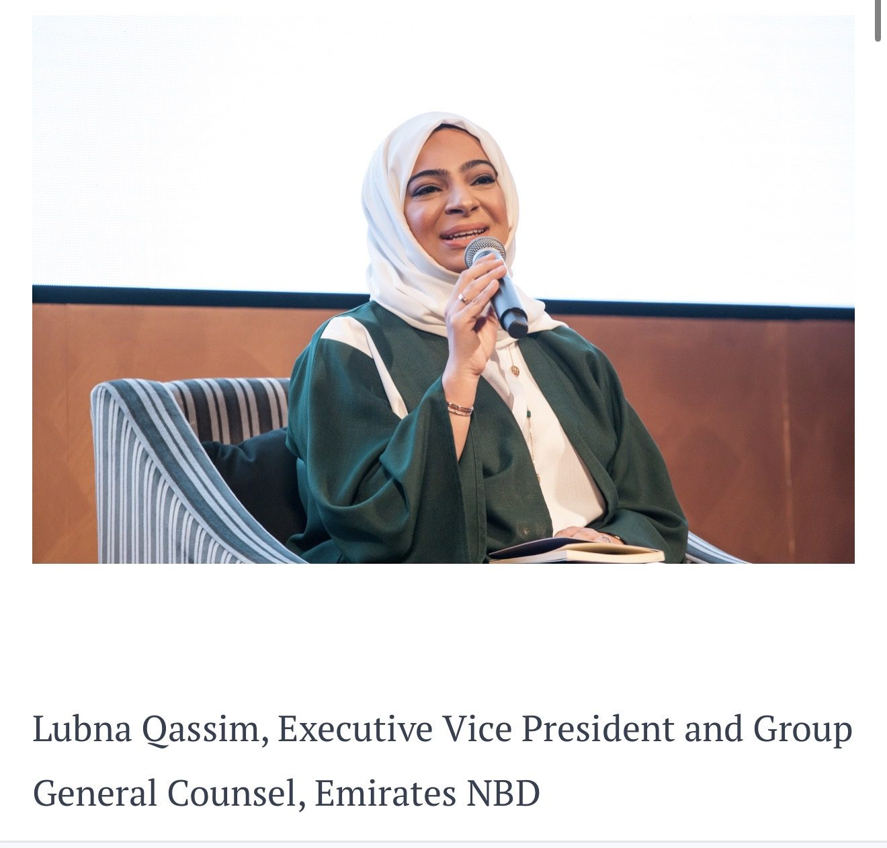

Speaking
Six things worth
an hour of a room
Lubna speaks on the intersection of geoeconomics, international affairs, governance, leadership and institutional change, drawing on more than two decades across government, financial services, international law and multilateral diplomacy.
-
01
Geoeconomics and the New Global Order
How economics, investment, regulation and diplomacy are reshaping international power.
-
02
The Gulf and the Changing Architecture of Global Power
The evolution of the Gulf's role in global economic and geopolitical affairs, and what the region's increasing international engagement means for business, diplomacy and institutions.
-
03
Leadership Across Institutions: From the Boardroom to the Diplomatic Table
A personal keynote drawing on a career across private practice, government, banking and diplomacy — transitions lived rather than studied.
-
04
The Boardroom Meets the Diplomatic Table
What leaders can learn from diplomacy about negotiation, stakeholder management, influence and decision-making — and what diplomacy can learn from business about governance, execution and accountability.
-
05
Women, Leadership and Economic Participation
Not a generic talk on women in leadership, but what institutions actually need to do to create genuine pathways — drawn from navigating senior leadership across government, financial services and international diplomacy.
-
06
Law, Reform and Institutional Change
How legal and regulatory architecture can enable economic and institutional transformation, drawing directly on legislative reform experience.
Formats
- Keynotes
- Executive Dialogues
- Board Retreats
- Roundtables
- Moderation
- University Lectures
- Policy Conversations
Keynotes are only part of it. A moderated conversation, a board retreat or a closed-door roundtable is often the better use of me — an intelligent room grappling with a difficult question suits me more than a motivational speech.